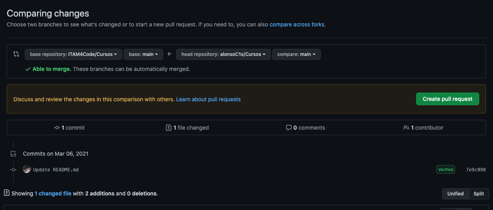
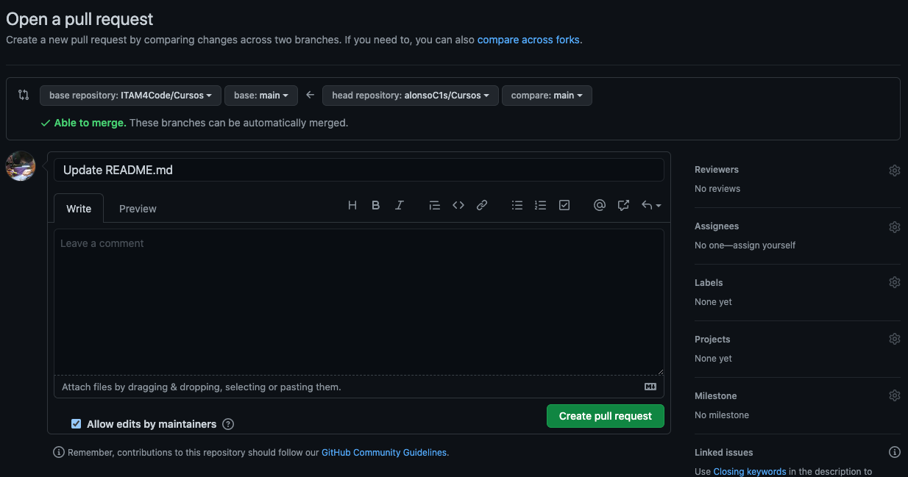

Pull Requests
Los pull requests son el concepto más importante de este capítulo. Si no puedes leer el resto del capítulo, es indispensable que leas por lo menos esta sección.
Los pull requests, como su nombre sugiere, son peticiones que hace una persona que hizo cambios a un repo para que las personas encargadas del mantenimiento lo revisen y quizás incorporen los cambios al código principal. Los pull requests se pueden hacer por personas con permisos de modificar el código directamente, o por personas que hayan hecho un fork del repo porque no tienen ese permiso. Para las personas con permisos pueden hacer una petición al resto del equipo para que revisen su código y aprueben los cambios hechos. Para las personas que hacen un pull request mediante un fork es una propuesta para incorporar sugerencias. Por ejemplo para resolver un issue creado o proponer nueva funcionalidad.
¿Cómo crear un pull request?
Esta guía está enfocada a la creación de pull requests mediante
forks porque es un caso de uso más común. Para eso, se necesita
tener un fork listo. Retomamos el ejemplo de fork en los primeros
capítulos de la guía. Digamos que después de haber clonado
ITAM4Code/Cursos y hacer cambios a él1, una vez
sincronizado GitHub, aparecerá una pantalla similar a la siguiente en
la página principal del repo.
Esto puede sonar muy vago, y lo es. Los detalles de cómo clonar, modificar y "sincronizar" cambios con GitHub están en la guía específica de git.

En el área marcada con el rectángulo rojo se encuentra el área en la que se muestra el mensaje de confirmación de los cambios más recientes. En este caso, GitHub sabe que este repo es un fork de otro repo, y además nota que están en versiones distintas. En este caso el fork está adelantado al original. Es decir, si hay cambios en el fork se puede hacer un pull request para que se reflejen estos cambios en el original. Y efectivamente, en el lado derecho del recuadro GitHub da un botón para crear un pull request.

En esta primera pantalla GitHub muestra una comparación de los cambios en el fork vs. el original. Si no hay conflictos2 GitHub dará la opción de crear un Pull Request y se puede continuar el proceso dando click al botón verde.
Otro concepto que se explora más en la guía de git

En este paso vemos dos áreas para llenar información, una a la derecha y otra a la izquierda. En la izquierda se puede llenar el título del pull request y el resto de información relevante. En la sección sobre issues detallamos un poco más sobre qué se puede incluir en esta sección.
Del lado derecho hay una variedad de opciones:
- Assignees
- Labels
- Projects
- Milestones
- Issues
Sin muchos detalles, esto es lo que cada campo se refiere:
-
Permite asignar personas o equipos específicos para que revisen este issue en particular. Usualmente esto está reservado para las personas que administran el repo.
-
Los labels son etiquetas que se dan al issue. Como se mencionaba un issue puede referirse a muchas cosas y esto ayuda a organizar issues de la misma categoría. Puedes dar click y explorar las opciones, es común que cada proyecto decida qué labels quiere usar.
-
Los proyectos son tableros que permiten catalogar issues en categorías como: por hacer, en progreso, y resueltas. Se hablará más de los proyectos más tarde.
-
Los milestones son listas que se pueden crear con issues específicos ordenados por prioridad. Se crean cuando se tiene un deadline en mente y se quiere ir revisando el progreso.
-
Se pueden resolver issues mediante pull requests. Si un pull request culmina con éxito, el issue asociado se resolverá.
¿Cómo cerrar un pull request?
Una vez creado un pull request aparecerá en la pestaña de pull requests en la página principal del repo. Si se da click sobre uno en específico se puede ver una pantalla como esta:

Aquí se pueden revisar los cambios dando click en las pestañas de Commits o Files Changed. GitHub mostrará una página de comparación entre el código del fork y el original. En la página principal se pueden hacer comentarios con respecto a los cambios, y sugerir otras modificaciones para poder aceptar el pull request. Si después de ese proceso se desea hacer merge, se puede dar click al botón verde marcado para eso. En caso de que se rechacen los cambios se puede cerrar sin hacer merge
Nota: Merge es un término particular de git. Se usa para referirse al proceso de mezclar dos versiones distintas de código a un destino. En este caso, a el repo original.